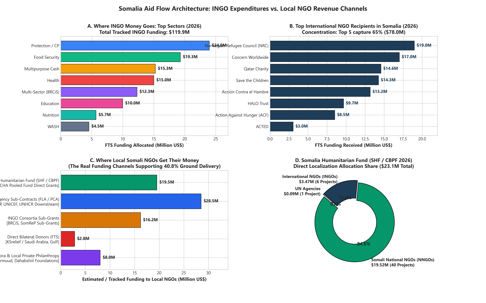

Empirical analysis of international donor contributions (FTS), UN OCHA Pooled Funds (Somalia Humanitarian Fund / CBPF), and downstream sub-contracting mechanics supporting frontline delivery across Somalia.
Synthesizing the primary international donor grants from UN OCHA FTS with the project-level allocations of the Somalia Humanitarian Fund (SHF / CBPF) and UN agency downstream sub-contracting models:

In 2026, International NGOs received $119,898,581 across 167 tracked donor grants. The data reveals where this money is directed:
| Sector / Cluster | Amount (USD) | Share (%) | Core Activities Funded |
|---|---|---|---|
| Protection & Child Protection | $23,963,966 | 20.0% | GBV survivor care, safe spaces, child protection |
| Food Security & Livelihoods | $19,279,189 | 16.1% | Mobile food vouchers, emergency livestock treatment |
| Multipurpose Cash (MPCA) | $15,262,661 | 12.7% | Unrestricted mobile money transfers to IDP families |
| Health | $15,009,430 | 12.5% | Primary health centres, mobile clinics, cholera teams |
| Multi-Sector Resilience (BRCiS) | $12,302,271 | 10.3% | Community resilience consortium grants |
| Education in Emergencies | $9,965,417 | 8.3% | Temporary learning spaces, school feeding kits |
| Nutrition | $5,683,806 | 4.7% | Outpatient therapeutic programmes, malnutrition screening |
| WASH | $4,540,382 | 3.8% | Solar water borehole rehabilitation, hygiene kits |
The top INGOs do not simply run isolated bilateral projects; they operate large multi-agency Consortia:
• Norwegian Refugee Council (NRC) ($19.0M): Leads the BRCiS Consortium (Building Resilient Communities in Somalia).
• Concern Worldwide ($17.0M): Major lead on Cash Transfer Programming (CTP) and nutrition partnerships.
• Qatar Charity ($14.6M): Direct institutional donor-implementer funding water projects and orphan care.
• Save the Children ($14.3M): Leads the GAASHAN Protection Project and major Education in Emergencies initiatives.
• Action Against Hunger / Acción Contra el Hambre ($21.7M combined): Clinical nutrition and WASH systems.
Because INGO international staff face strict movement limitations outside secure fortified zones (e.g., MIA Mogadishu airport compound, Baidoa hub), INGOs retain funds for program design, technical advisory, security tracking (via INSO), and sub-contract 30% to 50% of the operational delivery down to local Somali partner NGOs.
If direct bilateral donor grants in FTS account for only $2.81 million (0.80%), how do local Somali NGOs fund their 2,952 field operations (40.8% of all aid delivery in Somalia)? The data demonstrates four specific institutional financing channels:
The primary institutional lifeline. In 2026, UN OCHA allocated $19,524,281 (84.6% of SHF) directly to 40 Somali National NGO projects.
UN agencies receive $144.7M in FTS and sign Field Level Agreements (FLAs) with Somali NGOs (WFP food distribution, UNICEF nutrition centres, UNHCR protection).
Large consortia (BRCiS, SomReP, SNS) led by INGOs channel 30%–50% of rural implementation funds directly to local Somali NGOs who have community access.
Saudi Arabia (KSrelief: $2.75M) and Kuwaiti/Qatari foundations directly fund Somali NGOs (Zamzam, Mahasin, Juba Foundation) for emergency relief and Ramadan meals.
| Operating Organization | Partner Category | Project Title | Approved Budget (USD) | Target Beneficiaries | Duration | Status |
|---|---|---|---|---|---|---|
| Solutions for Humanity International | National NGO | Integrated Lifesaving WASH, Health, and Nutrition Response to Support Climate-Shocked, Flood-Affected, and Protection-Vulnerable Communities in Jowhar District, Middle Shabelle, Somalia. | $1,100,008.10 | 94,540 | 12 Months mos | Implementation & Reporting |
| New Ways Organization | National NGO | Provision of integrated life-saving WASH, Health and Nutrition services to underserved communities impacted by climatic shocks in hard-to-reach areas in Ceel buur district. | $937,200.00 | 46,800 | 12 Months mos | Implementation & Reporting |
| Norwegian Refugee Council | International NGO | Provision of integrated lifesaving assistance to support climate-affected, underserved communities in Jowhar | $899,999.99 | 35,832 | 12 Months mos | Implementation & Reporting |
| Towfiiq Umbrella Organization | National NGO | Provision of integrated lifesaving assistance to support underserved communities impacted by climatic shocks with heightened protection and flood risk in Jowhar-Middle Shabelle, Region | $800,000.00 | 20,054 | 9 Months mos | Implementation & Reporting |
| Skills Active Forward | National NGO | Provision of lifesaving WASH assistance to support underserved communities impacted by climatic shocks with heightened protection and flood risk in Beled Weyne district | $757,954.98 | 24,000 | 12 Months mos | Implementation & Reporting |
| Danish Refugee Council | International NGO | Integrated WASH and Protection Response for Drought- and Conflict-Affected Communities in Ceel Buur District. | $750,000.00 | 35,000 | 12 Months mos | Implementation & Reporting |
| Agency for Minority Rights and Development | National NGO | Integrated Emergency WASH Assistance for Crisis-Affected Communities in Qansax Dheere District, Bay Region | $700,000.00 | 35,000 | 7 Months mos | Implementation & Reporting |
| Humanitarian Integrity for Women Action | National NGO | Strengthening Access to Lifesaving WASH services for Vulnerable and Underserved Communities in Beledweyne | $697,535.61 | 20,466 | 12 Months mos | Implementation & Reporting |
| Tadamun Social Society | National NGO | Provision of lifesaving Food Security assistance with integrated Protection for hard-to-reach rural communities in Galdogob District, Mudug Region, Somalia. | $692,140.20 | 8,340 | 6 Months mos | Implementation & Reporting |
| Dignity First Somalia | National NGO | Integrated Multipurpose Cash Assistance (MPCA) and Emergency Livelihood Support for Climate-Shock-Affected Communities in Beletweyne District | $650,000.00 | 5,400 | 6 Months mos | Implementation & Reporting |
| Agency for Technical Cooperation and Development | International NGO | Integrated Emergency WASH Response for Flood-Affected Populations in Qansax Dheere District | $636,801.00 | 19,000 | 8 Months mos | Implementation & Reporting |
| Nomadic Development Organization | National NGO | Provision of Integrated Lifesaving Health and Nutrition Assistance to Support Underserved Communities Impacted by Climatic Shocks in Galdogob District, Somalia | $607,852.35 | 49,968 | 12 Months mos | Implementation & Reporting |
| Agency for Minority Rights and Development | National NGO | Lifesaving Multi-Purpose Cash Assistance and Emergency Agricultural Inputs for Food-Insecure Households in Jowhar District | $600,000.00 | 5,904 | 7 Months mos | Implementation & Reporting |
| Puntland Minority Women Development Organization | National NGO | Enhancing Access to Safe Water, Sanitation and Hygiene Services for Drought-Affected Vulnerable Communities in Galdogob District, Somalia | $599,999.83 | 20,000 | 10 Months mos | Implementation & Reporting |
| ACTION AGAINST POVERTY AND PEACE DEVELOPMENT | National NGO | Provision of integrated lifesaving assistance to support underserved communities impacted by climatic shocks with heightened protection and flood risk in Beledweyne district Hiran region, Somalia. | $599,991.61 | 26,679 | 12 Months mos | Implementation & Reporting |
| Wadajir Rural Development Organization | National NGO | Integrated Life-Saving Food Security Response through Unconditional Cash Transfers and Cash+ Agricultural Support for Vulnerable Households in Jowhar District, Middle Shabelle Region | $566,972.45 | 15,000 | 10 Months mos | Implementation & Reporting |
| Humanitarian Africa Relief Development Organization | National NGO | Provision of integrated lifesaving WASH assistance to support underserved communities impacted by climatic shocks with heightened protection and flood risk in Sakow District | $557,349.38 | 22,500 | 12 Months mos | Implementation & Reporting |
| Himilo Relief and Development Association | National NGO | Provision of life-saving assistance to communities affected by climatic shocks, particularly those with heightened protection and flood risks in Baletweyne | $512,581.15 | 12,858 | 12 Months mos | Implementation & Reporting |
| Somali Helping Hands Association | National NGO | Integrated lifesaving nutrition response for climate-vulnerable and flood-affected communities in Belet Weyne District | $511,524.33 | 19,350 | 12 Months mos | Implementation & Reporting |
| KULMIYE RELIEF AND DEVELOPMENT ORGANIZATION | National NGO | Provision of life-saving preventive and curative nutrition services for drought-affected populations in Qansax Dheere District, Bay Region. | $502,499.88 | 9,000 | 12 Months mos | Implementation & Reporting |
| Somali Lifeline Organization | National NGO | Integrated Lifesaving Health and Nutrition Response for Climate-Affected Communities in Beletweyne District, Somalia | $500,000.46 | 25,500 | 10 Months mos | Implementation & Reporting |
| Golweyne Relief and Rehabilitation NGO | National NGO | Life-Saving WASH Response to Combat Drought-Related Famine in Burhakaba | $500,000.00 | 15,000 | 12 Months mos | Implementation & Reporting |
| Rural Development Support Agency | National NGO | Provision of lifesaving Multipurpose Cash Transfer - MPCA and agricultural inputs (cash+ approach) to underserved HHs in Beletweyne impacted by climatic shocks, with protection and flood risks. | $478,978.99 | 7,092 | 12 Months mos | Implementation & Reporting |
| Himilo Organization for Development | National NGO | Integrated livestock support and multi-purpose cash Assistance for drought affected households in crisis and emergency phases in Ceelbur district, Galgaduud, Somalia | $462,800.00 | 4,200 | 6 Months mos | Implementation & Reporting |
| Somali Women and Child Care Association | National NGO | Lifesaving Multipurpose Cash Assistance and Emergency Agricultural Support for Vulnerable Households in Jowhar District, Middle Shabelle Region. | $444,174.00 | 4,872 | 6 Months mos | Implementation & Reporting |
| Danish Refugee Council | International NGO | Integrated Protection and MPCA Response for Drought- and Conflict-Affected Communities in Qansax Dheere District | $407,300.00 | 29,250 | 6 Months mos | Implementation & Reporting |
| SOS Children’s Villages Somalia | International NGO | Scaling Up Integrated Lifesaving Health, Nutrition, and Protection Assistance for Famine Response in Hard-to-Reach Rural Communities of Burhakaba District, Bay Region, Somalia | $399,999.99 | 114,266 | 7 Months mos | Implementation & Reporting |
| INTERSOM Relief and Development Organization | National NGO | Provision of Integrated Lifesaving Protection Response for Flood-and-Climate Affected Vulnerable Communities in Beletweyne District | $399,998.10 | 18,516 | 12 Months mos | Implementation & Reporting |
| WARDI Relief and Development Initiatives | National NGO | Provision of Integrated Life-Saving Nutrition Assistance to Underserved Communities Affected by Climatic Shocks, Heightened Protection Risks, and Flooding in Beledweyne District, Hiran Region | $399,989.64 | 13,639 | 12 Months mos | Implementation & Reporting |
| Somali Relief and Development Society | National NGO | Provision of Life-Saving Food Assistance for at risk of famine affected populations in Burhakaba District, Bay Region | $398,810.40 | 6,600 | 6 Months mos | Implementation & Reporting |
| Medair | International NGO | Scaling Up Life-Saving Health, Nutrition, and Protection Services for Famine Prevention Among Drought-Affected Rural Communities in Burhakaba | $379,999.99 | 5,167 | 6 Months mos | Implementation & Reporting |
| Dignity First Somalia | National NGO | Integrated Life-Saving GBV and Child Protection Services for Crisis-Affected Communities in Qansax Dheere District | $365,300.00 | 4,085 | 6 Months mos | Implementation & Reporting |
| Wamo Relief and Rehabilitation Services | National NGO | Provision of integrated emergency health and nutrition services for drought and conflict affected communities in Qansax Dheere District, Bay Region. | $363,599.38 | 13,364 | 12 Months mos | Implementation & Reporting |
| Volunteers for Relief and Development | National NGO | Provision of Essential Primary Healthcare to the Climate Shock-affected population in Elbur District, Galgadud region | $350,000.00 | 17,833 | 12 Months mos | Implementation & Reporting |
| Jubba Youth Association | National NGO | Integrated Health and Nutrition Assistance for Underserved Communities Affected by Climatic Shocks in Sakow District Jubbaland State of Somalia | $329,100.97 | 21,540 | 12 Months mos | Implementation & Reporting |
| Mandhere Relief and Development Organization | National NGO | Provision of integrated lifesaving health assistance to support underserved communities impacted by climatic shocks with heightened protection and flood risk in Qansaxdhere District | $319,999.45 | 35,000 | 12 Months mos | Implementation & Reporting |
| WARDI Relief and Development Initiatives | National NGO | Emergency Food Distribution to Address Acute Food Insecurity among Vulnerable Households in Burhakaba District | $319,920.80 | 5,178 | 6 Months mos | Implementation & Reporting |
| Soma Action | National NGO | Integrated life-saving Multipurpose Cash Assiststance for vulnerable drought-affected households in Saakow District,Somalia. | $313,500.00 | 3,420 | 6 Months mos | Implementation & Reporting |
| Peace Action Society Organisation for Somalia | National NGO | Provision of life-saving Food Security Support to Underserved Communities affected by climatic Shocks in Qansax Dhere District | $304,500.28 | 1,759 | 6 Months mos | Implementation & Reporting |
| Volunteers for Relief and Development | National NGO | Strengthening Access to Quality Primary Healthcare Services for Vulnerable Households Affected by Climate-Related Risks in Beledweyne District. | $300,000.00 | 14,705 | 12 Months mos | Implementation & Reporting |
| Peace Action Society Organisation for Somalia | National NGO | Provision of Lifesaving Water, Sanitation and Hygiene (WASH) Services to 15,000 Drought-Affected Vulnerable Communities in Sablaale District, Lower Shabelle Region, Somalia | $300,000.00 | 15,000 | 6 Months mos | Implementation & Reporting |
| New Ways Organization | National NGO | Provision of integrated life-saving Health services to underserved communities impacted by climatic shocks in Sablale district | $300,000.00 | 20,000 | 12 Months mos | Implementation & Reporting |
| Somali Community Concern | National NGO | Improving Gender-Based Violence (GBV) Support and Access for Rural Communities in Jowhar District, Hirshabelle State, Somalia | $299,999.57 | 11,392 | 12 Months mos | Implementation & Reporting |
| Action Sustainability Improvement Programs | National NGO | Immediate Life-Saving Assistance Through UCT and Agricultural-Inputs for the Most Vulneralbe Affected and Displaced Communities in Sablaale District, Lower Shabelle Region | $250,000.00 | 3,600 | 6 Months mos | Implementation & Reporting |
| Agro-pastoral Charity Organization | National NGO | Lifesaving Nutrition response for underserved communities impacted by climatic shocks in Sablaale District, Lower Shabelle Region, Somalia | $229,999.19 | 7,170 | 6 Months mos | Implementation & Reporting |
| INTERSOM Relief and Development Organization | National NGO | Provision of Emergency Child Protection Response for Flood- and Drought-Affected Communities in Jowhar District. | $199,999.95 | 4,000 | 12 Months mos | Implementation & Reporting |
| Food and Agriculture Organization of the United Nations | UN Agency | Support to the Food Security and Nutrition Analysis Unit (FSNAU) for follow-up Integrated Food Security, Nutrition and Mortality assessment among Baidoa IDPs | $87,000.00 | 515,290 | 3 Months mos | Disbursement |
All data cited above is verifiable through the following official OCHA FTS and HDX sources, already downloaded and parsed in your workspace:
| Dataset Name | Online Official Source | Local File in Workspace | What Data It Contains |
|---|---|---|---|
| FTS Incoming Flows (2026) | fts.unocha.org/countries/206 | somali data all .xlsx |
All 431 primary donor grants ($349.1M) into UN, INGO, and NNGO recipients. |
| FTS Internal Pass-Through Flows | HDX: som-requirements-and-funding-data | hdx_data/fts_internal_funding_som.csv |
Internal funding transfers ($23.1M) from SHF to NGOs. |
| CBPF Project Allocations (SHF) | HDX: somalia-cbpf-allocations-and-contributions | hdx_data/som_cbpf_project_summary.csv |
2,010 projects showing exact allocations to each National Somali NGO vs INGO (2017–2026). |
| CBPF Donor Contributions | HDX: somalia-cbpf-allocations-and-contributions | hdx_data/somalia_cbpf_allocations_som_cbpf_contributions.csv |
Donor deposits into the Somalia Humanitarian Fund ($42.3M in 2026). |
| Operational Presence (3W) | HDX: Somalia Operational Presence 3W | hdx_data/somalia_3w_operational_presence_2026.xlsx |
7,233 records showing 40.8% of ground field delivery is performed by Local Somali NGOs. |